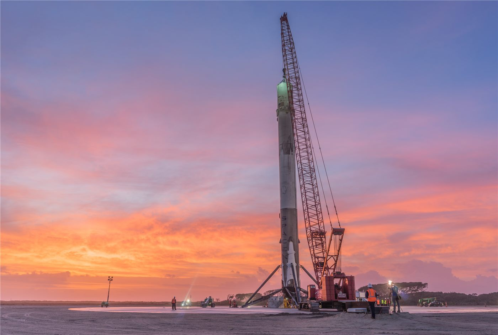

주췌 3호 1단 육상 회수 성공… 중국 상업우주 재사용 단계로
중국 민간 발사체 주췌 3호가 야오2 임무에서 1단 로켓의 육상 회수에 성공했다. 재사용 발사체 개발이 시험 단계를 넘어서고 있음을 보여주는 결과다.
여년재 기자 · 2026.09.04
橋중국

중국 상업우주 분야에서 주췌 3호 야오2 발사체가 둥펑 상업우주 혁신시험구역에서 발사돼, 1단이 예정된 절차에 따라 육상 회수를 완료했다.
광고 문의 · 300×250재사용 발사체는 1단을 회수해 다시 쓰는 구조로 발사 비용을 낮추는 기술이다. 1단은 전체 발사체 비용에서 큰 비중을 차지하기 때문에, 회수 성공은 단가 구조를 바꾸는 출발점이 된다.
회수 방식은 크게 해상 바지선 착륙과 육상 착륙으로 나뉜다. 육상 회수는 착륙 지점 관리와 안전 구역 확보가 까다롭지만, 회수 후 정비와 재사용 준비가 상대적으로 수월하다는 장점이 있다.
이번 성공은 중국 상업우주 기업들의 발사 서비스 경쟁 구도와도 연결된다. 저궤도 위성망 구축 수요가 커지면서, 저비용·고빈도 발사 능력이 사업의 핵심 조건으로 자리 잡고 있다.
같은 기간 중국은 타이위안 위성발사센터에서 창정 2호 병 발사체로 위성 발사에 성공했다. 국가 주도 발사와 상업 발사가 병행되는 구조가 정착되는 모습이다.
다만 한 차례 회수 성공과 반복 재사용 사이에는 거리가 있다. 실제 비용 절감은 같은 기체를 몇 번 다시 쓸 수 있는지, 정비 비용이 얼마인지에 따라 결정된다.
한국과 대만의 우주 산업도 발사 서비스와 위성 부품 쪽에서 성장세를 보이고 있다. 동아시아 전체로 보면 발사 수요가 늘어나는 국면이며, 부품 공급망에서의 협업 여지도 함께 커진다.
출처·참고 (사실 확인용 — 본문은 직접 재작성)
· https://www.cnsa.gov.cn/
· https://www.news.cn/
· https://www.cnsa.gov.cn/
· https://www.news.cn/